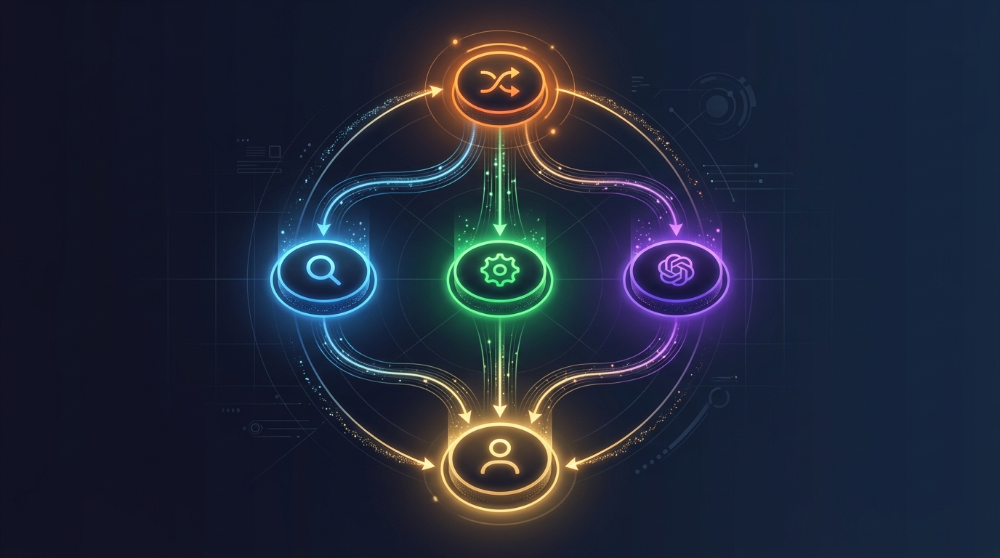

Put your AI work on autopilot.
MultiAgent gives every request the right specialist, the right context, and a clear next step. One calm command center for research, documents, web intelligence, and the work between them.
Analyzing your data with multiple agents working in parallel...
Smart routing delivers 10x faster responses with AI orchestration
Everything You Need for
Intelligent AI Automation
Our multi-agent architecture combines smart routing, document intelligence, web scraping, and stateful conversations into one powerful platform.
Smart Intent Router
AI-powered intent classification that dynamically routes queries to RAG, Tool Calling, or Direct LLM pipelines with keyword heuristics and LLM fallback.
Hybrid RAG Search
Combines Semantic Vector Search with BM25 Keyword Search, fused through Reciprocal Rank Fusion (RRF) for superior document retrieval accuracy.
LangGraph Stateful Workflows
Stateful multi-agent workflow graph with Router → RAG / Tool / Direct → Assistant nodes. Thread-based conversation memory via MemorySaver checkpointing.
AI-Powered Web Scraping
Extract structured data from any website with ScrapeGraphAI. Supports single-page, multi-page, and real-time live scraping with LLM-guided extraction.
Multi-Model Orchestration
Switch between Gemini, Groq, and Mistral models with tiered routing — Fast, Slow, and Pro modes with automatic fallback sequences for reliability.
PDF Upload & Vectorization
Upload PDFs and documents that are automatically chunked, embedded with Gemini Embeddings, and stored in MongoDB Atlas Vector Store for instant retrieval.
How the Multi-Agent
Orchestration Works
Every query flows through our intelligent pipeline — classified, routed, processed, and synthesized by specialized agents.

Smart Intent Classification
Your query enters the Intent Router which uses keyword heuristics + LLM classification to determine the best route: RAG, Tool Calling, or Direct LLM.
Conditional Agent Routing
LangGraph's conditional edges dispatch the query to the specialized agent node — document search, web tools, or direct generation — based on the classification.
Pipeline Execution
The selected agent executes: Hybrid RAG retrieves documents, Tool Agent calls Tavily/ScrapeGraph, or Direct LLM generates from knowledge.
Assistant Synthesis & Memory
The Assistant Node synthesizes the final response using retrieved context, tool outputs, and full conversation history stored via MemorySaver checkpoints.
Powerful Tools at
Your Agent's Fingertips
Five specialized LangChain tools that your agents can invoke autonomously based on the user's intent.
Tavily Search
Real-time web search via Tavily AI API. Get factual, up-to-date news, events, and internet content with configurable result limits.
tavily_search_tool
Web Scraper
Extract structured data from any URL using ScrapeGraphAI SmartScraperGraph with LLM-guided content extraction and prompt-based targeting.
scrapegraph_web_scraper
Realtime Scraper
Simultaneously scrape multiple URLs in real-time. Supports ScrapeGraph Cloud API with local SmartScraperMultiGraph fallback.
scrapegraph_realtime_scraper
Graph Web Search
Graph-based web search using ScrapeGraphAI SearchGraph engine for deep internet research with structured extraction capabilities.
scrapegraph_web_search
Vector Store Search
Query MongoDB Atlas Vector Store for semantic document chunk retrieval. Search uploaded PDFs, resumes, and knowledge bases with cosine similarity.
vector_store_search
Production-Grade
Tech Stack
FastAPI
High-performance async Python API
LangGraph
Stateful multi-agent workflow graphs
LangChain
Tool binding & agent execution
Gemini AI
LLM completion & embeddings
Groq
Ultra-fast inference fallback
MongoDB Atlas
Vector store & document database
Tavily
Real-time web search API
ScrapeGraphAI
LLM-powered web scraping
RESTful API
Endpoints
Clean, documented FastAPI endpoints ready to integrate with any frontend, mobile app, or third-party service.
/api/v1/chat
Multi-model chat with mode tiers (Fast/Slow/Pro) and automatic fallback sequences
/api/v1/router/execute
Smart orchestrator — classifies intent and auto-routes to RAG, Tools, or Direct LLM
/api/v1/langgraph/chat
Stateful LangGraph workflow with thread-based memory and conversation history
/api/v1/rag/query
Hybrid RAG search with Semantic + BM25 + RRF fusion over uploaded documents
/api/v1/upload
Upload PDFs for automatic chunking, embedding, and vector store indexing
/api/v1/agent/execute
Execute LangChain Tool Agent with Tavily, ScrapeGraphAI, and Vector Store tools
/health
Health check endpoint with MongoDB connection status monitoring
Ready to Build with
Multi-Agent AI?
Clone the repository, configure your API keys, and start deploying intelligent agent workflows in minutes.
# Quick start
git clone https://github.com/your-repo/multi-agent-system
cd backend && pip install -r requirements.txt
python server.py